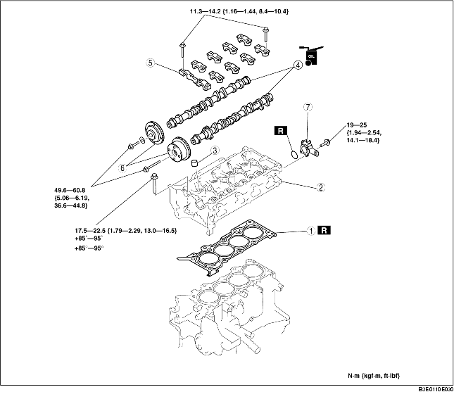
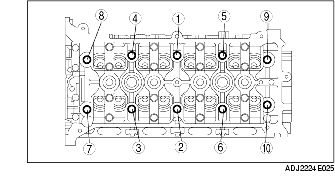
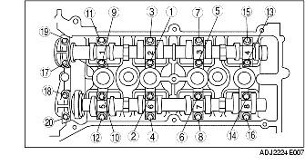
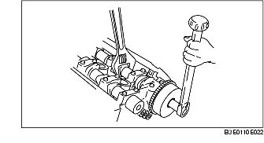

Cylinder head (II) assembly
1. Assemble in the order indicated in the table.

|
1
|
Cylinder head gasket
|
|
2
|
Cylinder head
|
|
3
|
Tappet
|
|
4
|
Camshaft
(See Camshaft Assembly Note)
|
|
5
|
Camshaft cap
(See Camshaft Assembly Note)
|
|
6
|
Camshaft sprocket, variable valve timing actuator
|
|
7
|
Water outlet
|
Cylinder Head Assembly Note
1. Tighten the cylinder head installation bolts in three steps in the order shown in the figure.

- (1)Tightening torque
- 17.5-22.5 N·m {1.79-2.29 kgf·m, 13.0-16.5 ft·lbf}
- (2)Tightening angle
- 85°-95°
- (3) Tightening angle
- 85°-95°
Camshaft Assembly Note
1. Install the camshaft cap to the position shown in the figure, and temporarily tighten the No.2 and No.7 camshaft installation bolts.

2. Tighten the camshaft cap installation bolts in two to three passes uniformly in the order shown in the figure.
Camshaft Sprocket, Variable Valve Timing Actuator Assembly Note
1. Fix the camshaft using a suitable wrench on the cast hexagon as shown in the figure.

2. Tighten the camshaft sprockets and variable valve timing actuator installation bolts.